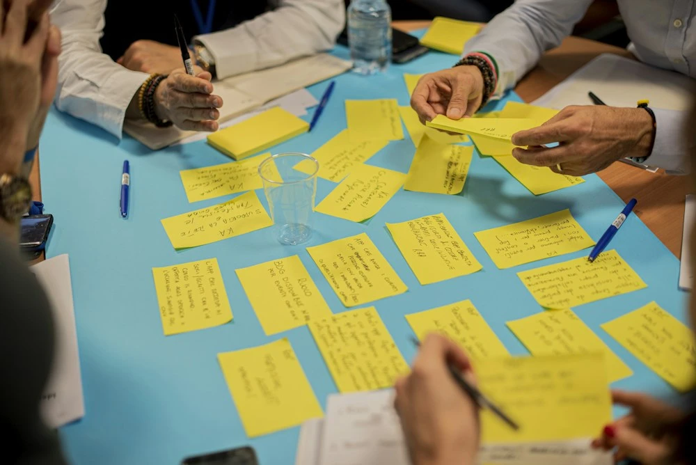

About FreneticFocus
Lara van Rooyen

Meet Lara van Rooyen
Helping people turn
change into opportunity.
Change management. Program management. Digital confidence.
Lara provides workshops and practical support to businesses and individuals seeking to enhance their digital literacy and operational efficiency.
Based in Stockholm and Nice, she brings two decades of experience in transformative change initiatives across Europe, Australia and South Africa, with experience at organisations including Microsoft, Oracle, Ericsson and Janssen.
Prosci Change Management certified, Lara has worked across health and pharma, IT and telecommunications, in both the public and private sectors. She works in English and Swedish.
Connect with FreneticFocusStrategy grounded
in real experience.
We combine a broad view of organisational change with the day-to-day realities of getting things done.
Whether you need to coordinate a programme, support a new technology rollout or better understand your customers, the focus stays on practical steps and the people who will make them happen.
Explore our expertiseGet in touch
Let’s talk about your project.
Let’s explore how we can support your people, your projects and your next transformation.
Get in touch